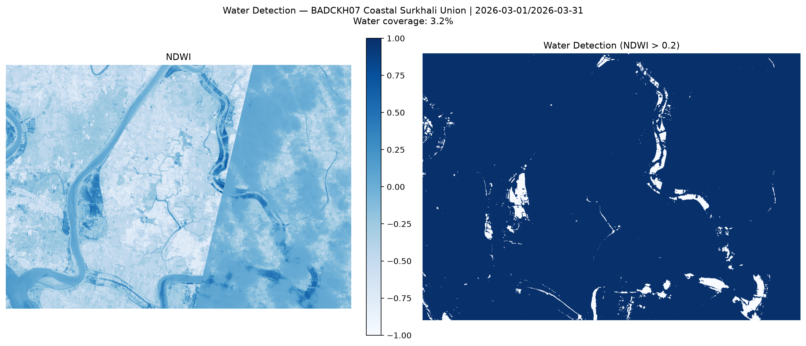
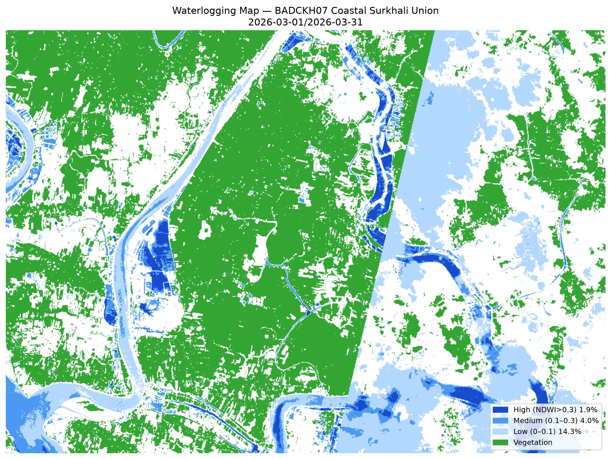
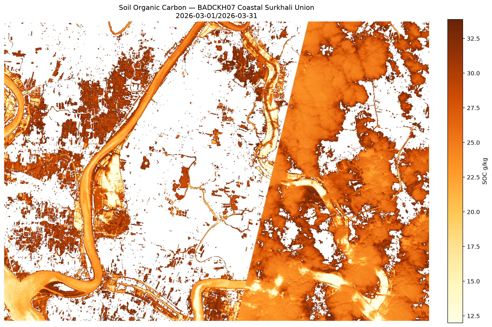

13 Analytical Sections
Each report contains publication-ready sections from cover through recommendations.

1. True-Color Composite
Natural RGB rendering of AOI at 10m resolution.

2. False-Color (NIR)
Vegetation vitality via near-infrared reflectance.

3. Spectral Indices Dashboard
NDVI · NDWI · EVI · SAVI · NDRE side-by-side.

4. Water Body Detection
Permanent water · flood risk · enhanced mask.

5. Waterlogging & Tidal Risk
MNDWI-based tidal inundation for coastal AOIs.

6. Land Use / Land Cover
Rice · Shrimp gher · Mangrove · Fallow classification.

7. Change Detection
Seasonal shifts — Aman → Boro vegetation transitions.

8. Drainage & Salinity
Persistence + congestion score over LULC zones.

9. Soil Organic Carbon
SOC (g/kg) estimation for saline coastal soils.

10. Crop Residue Cover
NDTI post-harvest stubble analysis.

11. QA & Compliance
BADC Spec §4 compliance report.
12. Executive Findings
Narrative summary of key insights per section.
13. Recommendations
Action items for BADC, BWDB, DAE, producers.